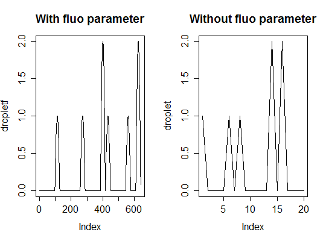

summaryadpcr,
ddpcr or qdpcr.FALSE, no output is printed.Expands function summary allowing printing summaries
objects of the class adpcr to or
ddpcr.
The function prints a summary of the dPCR reaction, including k (number of positive chambers), n (total number of chambers), estimated lambda and m (number of molecules per plate), as well as confidence intervals for the last two variables.
If summary is used on an object containing results of many
experiments, all experiments would be independently summarized. Currently
supported only for objects of class adpcr.
Bhat S, Herrmann J, Corbisier P, Emslie K, Single molecule detection in nanofluidic digital array enables accurate measurement of DNA copy number. Analytical and Bioanalytical Chemistry 2 (394), 2009.
Dube S, Qin J, Ramakrishnan R, Mathematical Analysis of Copy Number Variation in a DNA Sample Using Digital PCR on a Nanofluidic Device. PLoS ONE 3(8), 2008.
# array dpcr # Simulates a chamber based digital PCR with m total number of template molecules # and n number of chambers per plate and assigns it as object ptest of the class # adpcr for a single panel. The summary function on ptest gets assigned to summ # and the result with statistics according to Dube et al. 2008 and Bhat et al. 2009 # gets printed. ptest <- sim_adpcr(m = 400, n = 765, times = 5, dube = FALSE, n_panels = 1) summ <- summary(ptest) #save summaryNumber of positive partitions: 298 Total number of partitions: 765 Number of runs: 1 Number of experiments: 1 experiment replicate assay method lambda lambda.low lambda.up m m.low m.up k n Experiment1 1 Unknown dube 0.4935466 0.4384841 0.5518185 377.5631 335.4404 422.1411 298 765 Experiment1 1 Unknown bhat 0.4935466 0.4646651 0.5224280 377.5631 355.4688 399.6574 298 765print(summ)$partitions $partitions$k [1] 298 $partitions$n [1] 765 $summary experiment replicate assay method lambda lambda.low lambda.up m m.low m.up k n 1 Experiment1 1 Unknown dube 0.4935466 0.4384841 0.5518185 377.5631 335.4404 422.1411 298 765 2 Experiment1 1 Unknown bhat 0.4935466 0.4646651 0.5224280 377.5631 355.4688 399.6574 298 765 $nexper [1] 1 $nrun [1] 1# multiple experiments # Similar to the previous example but with five panels ptest <- sim_adpcr(m = 400, n = 765, times = 5, dube = FALSE, n_panels = 5) summary(ptest)Number of positive partitions: 320, 300, 302, 316, ... Total number of partitions: 765, 765, 765, 765, ... Number of runs: 5 Number of experiments: 1 experiment replicate assay method lambda lambda.low lambda.up m m.low m.up k n Experiment1 1 Unknown dube 0.5418016 0.4834464 0.6037742 414.4782 369.8365 461.8873 320 765 Experiment1 1 Unknown bhat 0.5418016 0.5111421 0.5724610 414.4782 391.0237 437.9327 320 765 Experiment1 2 Unknown dube 0.4978384 0.4424811 0.5564407 380.8464 338.4980 425.6772 300 765 Experiment1 2 Unknown bhat 0.4978384 0.4687980 0.5268789 380.8464 358.6304 403.0623 300 765 Experiment1 3 Unknown dube 0.5021488 0.4464957 0.5610826 384.1438 341.5692 429.2282 302 765 Experiment1 3 Unknown bhat 0.5021488 0.4729488 0.5313487 384.1438 361.8058 406.4818 302 765 Experiment1 4 Unknown dube 0.5328529 0.4751049 0.5941414 407.6325 363.4552 454.5181 316 765 Experiment1 4 Unknown bhat 0.5328529 0.5025217 0.5631842 407.6325 384.4291 430.8359 316 765 Experiment1 5 Unknown dube 0.5239837 0.4668388 0.5845931 400.8475 357.1317 447.2138 312 765 Experiment1 5 Unknown bhat 0.5239837 0.4939784 0.5539890 400.8475 377.8935 423.8016 312 765# droplet dpcr - fluorescence # Simulates a droplet digital PCR with m = 7 total number of template molecules # and n = 20 number of droplets. The summary function on dropletf gives the # statistics according to Dube et al. 2008 and Bhat et al. 2009. The fluo parameter # is used to change the smoothness of the fluorescence curve and the space between # two consecutive measured peaks (droplets). dropletf <- sim_ddpcr(m = 7, n = 20, times = 5, fluo = list(0.1, 0)) summary(dropletf)Number of positive partitions: 6 Total number of partitions: 20 Number of runs: 1 Number of experiments: 1 experiment replicate assay method lambda lambda.low lambda.up m m.low m.up k n Experiment1 1 Unknown dube 0.3566749 0.1044315 0.6948217 7.133499 2.088629 13.89643 6 20 Experiment1 1 Unknown bhat 0.3566749 0.2102899 0.5030600 7.133499 4.205799 10.06120 6 20# droplet dpcr - number of molecules # Similar to the previous example but with five panels but without and modifications # to the peaks. droplet <- sim_ddpcr(m = 7, n = 20, times = 5) summary(droplet)Number of positive partitions: 5 Total number of partitions: 20 Number of runs: 1 Number of experiments: 1 experiment replicate assay method lambda lambda.low lambda.up m m.low m.up k n Experiment1 1 Unknown dube 0.2876821 0.06211724 0.5794127 5.753641 1.242345 11.58825 5 20 Experiment1 1 Unknown bhat 0.2876821 0.15858263 0.4167815 5.753641 3.171653 8.33563 5 20# Visualize the results of dropletf and dropletf # The curves of dropletf are smoother. par(mfrow = c(1,2)) plot(dropletf, main = "With fluo parameter", type = "l") plot(droplet, main = "Without fluo parameter", type = "l")